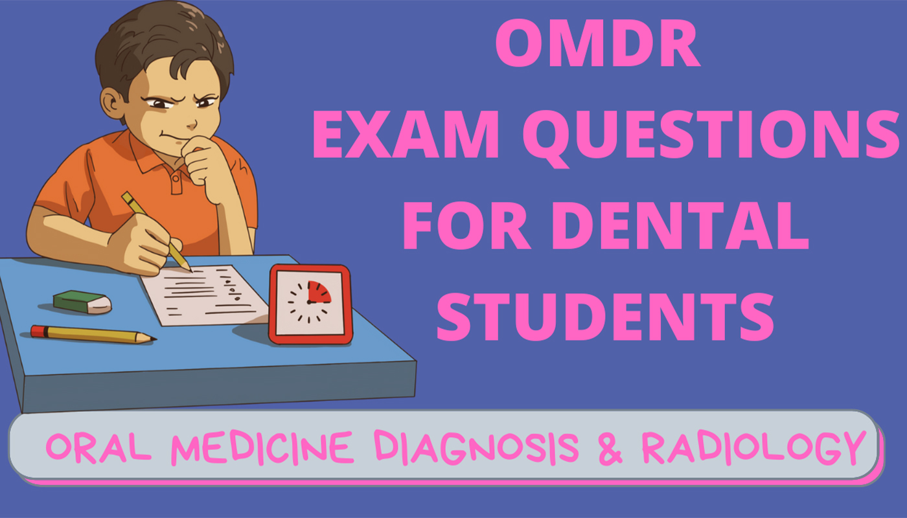

Oral Medicine, Diagnosis & Radiology (Omdr)
Long Questions
- Enumerate premalignant lesions and conditions affecting oral cavity. Write in details the etiopathogenesis, Clinical manifestations and management of Oral Lichen Planus.
- Classify salivary gland disorders. Write in detail the etiology, clinical features, diagnosis and management of Sjogren’s syndrome.
- Write in detail the effects of radiation on oral cavity.
- Enumerate the various extra oral skull views used in dentistry. Write, in detail Water’s View.
- Classify orofacial pain and write in detail on management of Trigeminal Neuralgia.
- Enumerate red and white lesions. Write in detail about Erythroplakia.
- Draw a neat labelled diagram of X-ray tube and write how X-rays are produced.
- Advanced radiographic techniques.
- Enumerate viral lesion of oral cavity. Write in detail the varicella zoster virus infection and its management.
- Enumerate potentially malignant disorders of oral cavity. Write in detail about oral lichen planus.
- Enumerate the various intraoral radiographic procedures. Write in detail, occlusal radiography.
- Write in detail about osteomyelitis.
- Define vesicle, bullae, ulcer and erosions. Write in detail the clinical manifestations, etiology and management of pemphigus.
- Write about the principles of image formation in panoramic radiography. Add a note on advantages and disadvantages of OPG.
- Write the contents of developer and fixer solutions. Write, in detail the manual processing procedure.
- Write in detail about the pigmented lesions of oral mucosa.
- Classify TMJ disorders. Write in detail the clinical features and management of myofascial pain dysfunction syndrome.
- Classify salivary gland disorders. Write in detail the syndromes associated, clinical features and management of xerostomia.
- Write in detail about the production of x-ray. Add a note on properties of x-ray.
- Enumerate hazards of radiation. Discuss the ill effects of radiation on Oral tissues.
- Write in detail the physical, chemical and biological properties of X-ray.
- Enumerate vesiculobullous lesions affecting oral mucosa. Write about the clinical features and treatment of Primary Herpetic Gingivostomatitis. Add a note on herpetic Whitlow.
- Classify TMJ disorders. Write about the clinical features evaluation and treatment of Myofascial Pain Dysfunction syndrome.
- Define radiation biology. Write about the harmful effects of radiation to oral cavity.
- Write about the radio opaque and radiolucent landmarks of mandible.
- Define Trismus? Discuss the differential diagnosis of Trismus. Describe in details about management of OSMF.
- Classify pigmented lesions of oral cavity. Write in details about the etiology, C/F, in each lesion.
- Enumerate various extra oral radiographs. Discuss, in details about OPG.
- Write in details about X-ray production with schematic representation of various part about X-ray tube.
- Describe the parts of X-Ray tube. Describe in detail about ionizing radiation to biological tissue.
- What is Oral Ulcer? Discuss in detail about etiology, clinical features, investigations and treatment modalities of Oral ulcer.
- Classify Fibro Osseous lesions of jaws. Discuss in detail the clinical and radiographic features of Paget’s Disease.
- Define leukoplakia. Write in detail about etiology, clinical features, investigation and its management.
- Classify TM disorders. Describe in detail about the management of MPDS.
- Enumerate various vesiculobullous lesions of oral cavity. Describe clinical features, investigations required and management of pemphigus
- Describe the principles of IOPA radiographs. Discuss about occlusal radiograph.
- Define an ideal radiograph. Describe, the basic principles to obtain an ideal radiograph.
- Classify pigmented lesions of oral mucosa. Write in detail about the etiology, clinical types, clinical features, investigations and management of oral lichen planus.
- What are the principles of projection geometry? Write in detail about the principle and method of paralleling angle technique of IOPAR.
- Classify ulcerative lesions and describe the etiology, c/f, D/D, and management of RAS.
Short Note
- Isolation
- Erythroblastosis fetalis
- Pit and fissure sealants
- Dunlop’s beta hypothesis
- Ugly duckling stage
- Diet counselling
- Tell-show-do technique
- Gum pad
- Balanced diet
- Dental fluorosis
- ANUG
- Natal and neonatal tooth
- Distal shoe space maintainer
- Infant oral health and anticipatory guidance
- Matrices used in pediatric operative dentistry
- Definition and scope of pediatric dentistry
- Contingency management
- Anterior Cross Bite
- Brushing methods for children
- Stainless steel crown
- Scope of Pedodontics
- Good effect v/s bad effects of fluoride
- Cvek’s pulpotomy
- Modification of key’s triad
- Difference between indirect and direct pulp capping
- Euphorism
- Turner’s hypoplasia
- Voice control
- APF Gel
- Frankel’s behaviour rating scale
- Apexification
- Feeding appliance
- ECC and its pattern of development
- Serial Extraction technique
- Psychic triad
- Fluoride varnish
- Preventive Resin Restoration (PRR)
- Band and loop space maintainer
- Pre-appointment behaviour modification
- Composite restorative materials
- Pedodontic treatment triangle
Recommended Books for Pediatric Dentistry :-
Let's Connect